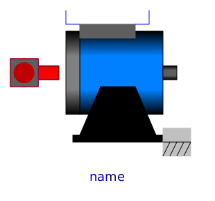
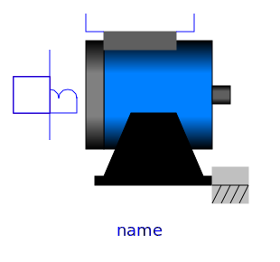

.
Modelica
.
Electrical
.
Machines
.
BasicMachines
.
DCMachines
Information
This package contains models of DC machines:
DC_PermanentMagnet: DC machine with permanent magnet excitation
DC_ElectricalExcited: DC machine with electrical shunt or separate excitation
DC_SeriesExcited: DC machine with series excitation
Contents
Name
Description

DC_PermanentMagnet
Permanent magnet DC machine

DC_ElectricalExcited
Electrical shunt/separate excited linear DC machine
DC_SeriesExcited
Series excited linear DC machine
Revisions
Main Authors:
Anton Haumer
Technical Consulting & Electrical Engineering
A-3423 St.Andrae-Woerdern
Austria
email:
a.haumer@haumer.at
Copyright:
Copyright © 1998-2015, Modelica Association and Anton Haumer.
The Modelica package is
free
software; it can be redistributed and/or modified under the terms of the
Modelica license
, see the license conditions and the accompanying
disclaimer
in the documentation of package Modelica in file "Modelica/package.mo".
v1.02 2004/09/19 Anton Haumer
v1.03 2004/09/24 Anton Haumer
added DC machine with series excitation
v1.1 2004/10/01 Anton Haumer
changed naming and structure
issued to Modelica Standard Library 2.1
v1.2 2004/10/27 Anton Haumer
fixed a bug with support (formerly bearing)
v1.4 2004/11/11 Anton Haumer
removed mechanical flange support
to ease the implementation of a 3D-frame in a future release
v2.2.0 2011/02/10 Anton Haumer
conditional ThermalPort for all machines
Generated at 2015-10-02T11:24:32Z by
OpenModelica
OpenModelica 1.9.4~dev-128-g0bd0b1f